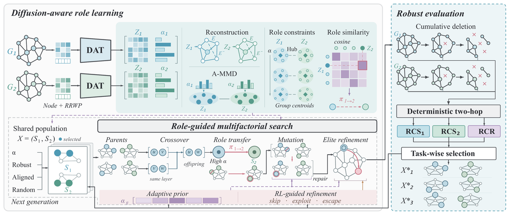
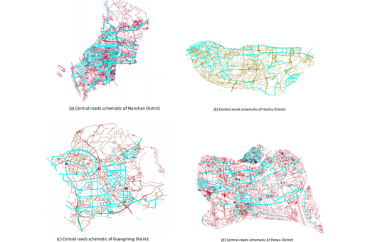

Yongxue Xu (Jerry)
jiangjiangcheng753 (at) gmail.com · 2715743744 (at) qq.com · xuyx85 (at) mail2.sysu.edu.cn
I am an undergraduate student at Sun Yat-sen University, majoring in Intelligent Science and Technology in the School of Intelligent Systems Engineering. My current research interests lie in video generation, world models, 4D scene understanding, and world-action models (WAM).
My research journey began in a data structures course, where I was first drawn to the elegance of representing a problem through structure. This taste later led me to graph-based decision problems, including robust competitive influence maximization on multilayer networks and critical node identification in urban road networks. These projects made me care less about isolated predictions and more about the hidden state of a system - the relationships, constraints, and dynamics that make an output meaningful.
Later, when I moved into video instance segmentation and 4D tracking, the same question reappeared in a more visual form. A mask, trajectory, or generated frame can look plausible at one moment and still fail once the camera moves, an object is occluded, or the scene is revisited. I gradually became more interested in whether a model can remember that it is still modeling the same world.
This realization led me toward video generation and action world models. I believe the missing piece is not simply a sharper decoder, a longer context window, or a larger generative backbone, but a persistent object-state core: a compact memory of which entities exist, where they are, how they move, how they relate, and how they persist through time, occlusion, viewpoint change, and action.
I am currently working closely with collaborators at the EPIC Lab of SJTU SAI, HKUST, ByteDance, Xiangru Huang's Embodied AI Lab at Westlake University, and PKU LumPin Lab on video generation, WAM, and multimodal spatiotemporal understanding projects. My current research is centered on controllable video generation and interactive world models.
News
- Two AAAI submissions are taking shape; the papers are not done, but hope is still alive.
- My academic homepage is finally online, so today counts as its birthday.
Selected Publications
-
TNSE

Solving the Robust Influence Maximization Problem in Competitive Multilayer Networks via a Diffusion-Aware Role-Guided Evolutionary ApproachIEEE Transactions on Network Science and EngineeringUnder review -
GBCESC

Identifying Critical Nodes with Deep Learning and Reinforcement Learning: A Case Study on Urban Road NetworksGBCESC 2025Best Paper Award